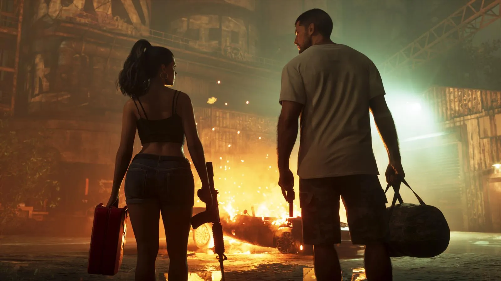

Starting From Zero: прохождение миссии GTA 6
Опубликовано:

Коротко
- Пару ищет вся полиция города, счета заморожены. Нужно забрать жёсткий диск у Андреа, статуэтку из хранилища и добраться до встречи на крыше, не попавшись. Миссия закрывает четвёртую главу.
- Глава 4, миссия 26 из 26. Играем за: Джейсон и Лусия.
- Награда: трофей Top of the World (конец главы 4).
Миссия коротко
| Глава | 4. Vice City, Baby |
| Номер в сюжете | 26 |
| Играем за | Джейсон и Лусия |
| Кто даёт | Джейсон и Лусия |
| Где начинается | Вайс-Сити, Southside |
| Условие | после Sunset |
| Награда | трофей Top of the World (конец главы 4) |
| Переиграть | нельзя — сохраняйтесь вручную |
Где начинается
Прохождение по шагам
- Миссия начнётся сама после Sunset. Проверьте телефон — счета заморожены, а Лусия договаривается с Андреа о встрече на стадионе Aqua.
- Уходите со свалки на машине рядом и езжайте к стадиону, не попадаясь полиции на глаза — ориентировка на пару уже по радио.
- Найдите Андреа на трибунах. Её машина на парковке, но сама она наверху, и метки сначала нет. Она отдаст жёсткий диск. Если полиция вас заметит, Андреа уйдёт и оставит диск, чтобы вы его забрали.
- Угоните машину к югу от стадиона, у стоянки лодок, — у главного входа полиция.
- Езжайте в Big House Storage и заберите из своей ячейки статуэтку. Там тоже появится полиция — оторвитесь.
- Лусией войдите в Acai Dreams: сообщение будто бы от Маттиа зовёт на крышу. Поднимитесь на лифте и идите за хостес к столику.
- Джейсоном поднимитесь на лифте на террасу.
- Идите за Джорджио через пентхаус, а потом за Дарданом в спальню — миссия закончится и сразу начнётся Bird in the Hand.
Советы
- Если есть деньги, купите новую одежду в ближайшем магазине — полиции сложнее вас узнать.
- Андреа ищите на трибунах, а не у машины.
- Выбор в сцене в пентхаусе на исход не влияет.
Подробности и секреты
- Это последняя миссия главы 4 (showgamer, theclick, wikigtavi).
- По данным Tech4Gamers, Андреа, отдав диск, просит забыть её номер; Outputlag пишет то же.
- Дальше — Bird in the Hand, первая миссия главы 5.
Что можно пропустить
Пропустить нечего.
Частые вопросы
Где Андреа в Starting From Zero?
На трибунах стадиона Aqua, ближе к юго-западу.
Какой трофей за Starting From Zero?
Top of the World — за прохождение главы 4.
Что забрать из Big House Storage?
Статуэтку из вашей ячейки; жёсткий диск отдаёт Андреа на стадионе.
Источники: PowerPyx, «GTA 6 Starting From Zero Walkthrough», 18–19.11.2026; GTABase, showgamer, Tech4Gamers, meowdb, etalongame, Outputlag, wikigtavi, theclick, TheDroidGuy — Starting From Zero, 20–28.11.2026. Кнопки указаны для PS5, в скобках — Xbox. Названия миссий — как в английской версии игры.